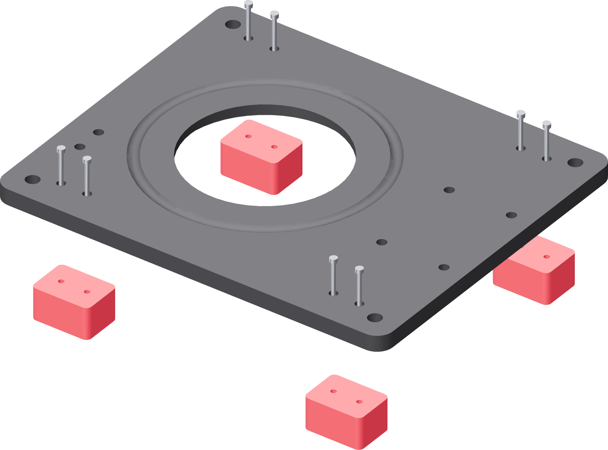

Put the base on its feet
Eight M3 × 25, driven down through the base's top face into the feet below it. The base is never turned over for this.

- Stand the four feet on the bench roughly where they go — two at each end, their long side across the base.
- Lower the base onto them and shuffle each foot until both of its screw bores line up with the counterbores in the base.
- Drop all eight M3 × 25 in first and start every one by a turn or two before tightening any.
- Bring them down on the PixelDrive at 0.5 N·m, working diagonally across the plate. Each head sits flush in its counterbore.
- Stand the fixture on the bench and rock it with a hand on each end.
Gate — it sits flat
All four feet touch the bench and the base does not rock. Nothing projects below any foot. The base now stands 24 mm off the bench, and that 24 mm is what makes the second closure's purge connection possible.